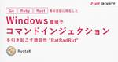

Flatt Security Blog
https://blog.flatt.tech/
株式会社Flatt Securityの公式ブログです。プロダクト開発やプロダクトセキュリティに関する技術的な知見・トレンドを伝える記事を発信しています。
フィード

Go, Ruby, Rust等の言語に存在した、Windows環境でコマンドインジェクションを引き起こす脆弱性"BatBadBut" 47
47
Flatt Security Blog
※本記事は筆者RyotaKが英語で執筆した記事を、弊社セキュリティエンジニアkoyuriが日本語に翻訳したものになります。 はじめに こんにちは、Flatt SecurityでセキュリティエンジニアをしているRyotaK( @ryotkak )です。 先日、特定の条件を満たした場合に攻撃者がWindows上でコマンドインジェクションを実行できる、いくつかのプログラミング言語に対する複数の脆弱性を報告しました。 本日(2024/04/09(訳者注: これは英語版記事の公開日です))、影響を受けるベンダーがこれらの脆弱性に関するアドバイザリーを公表しました。 その影響は限定的なもののCVSSスコア…
9日前

S3経由でXSS!?不可思議なContent-Typeの値を利用する攻撃手法の新観点
Flatt Security Blog
はじめに セキュリティエンジニアの齋藤ことazaraです。今回は、不可思議なContent-Typeの値と、クラウド時代でのセキュリティリスクについてお話しします。 本ブログは、2024 年 3 月 30 日に開催された BSides Tokyo で登壇した際の発表について、まとめたものです。 また、ブログ資料化にあたり、Content-Type の動作や仕様にフォーカスした形で再編を行い、登壇時に口頭で補足した内容の追記、必要に応じた補足を行なっています。 また、本ブログで解説をする BSides Tokyoでの発表のもう一つの題である、オブジェクトストレージについては、以下のブログから確認…
1ヶ月前
「YAMLパース占い」in RubyKaigi 2024 で伝えたかったこと
Flatt Security Blog
今年もRubyKaigiに協賛させていただきました！ Flatt Security 執行役員CCO / プロフェッショナルサービス事業部長の @toyojuni です。先日沖縄県那覇市で開催されたRubyKaigi 2024の振り返りと皆様への感謝の気持ちを込めて本記事を執筆します。 昨年に引き続いて、Flatt SecurityはRubyKaigiにPlatinum Sponsorとして協賛し、ブースを出展させていただきました。ありがたいことに、3日間でのブース訪問の延べ人数は500人を超え、様々なRubyistの方との接点を持てたと感じています。 そんな今回のブース出展の軸と言える企画が「…
1ヶ月前
オブジェクトストレージにおけるファイルアップロードセキュリティ - クラウド時代に"悪意のあるデータの書き込み"を再考する
Flatt Security Blog
はじめに セキュリティエンジニアの齋藤ことazaraです。今回は、オブジェクトストレージに対する書き込みに関連するセキュリティリスクの理解と対策についてお話しします。 本ブログは、2024年3月30日に開催された BSides Tokyo で登壇した際の発表について、まとめたものです。 また、ブログ資料化にあたりオブジェクトストレージを主題とした内容の再編と、登壇時に口頭で補足した内容の追記、必要に応じた補足を行なっています。 なぜ今、この問題を取り上げるのか？ 近年のクラウドリフト、クラウドシフトにより、クラウドを活用する場面が多くなってきていると思います。その中で、多くの場面で利用されるオ…
1ヶ月前
Is Secure Cookie secure? - CookieのSecure属性・__Host-プレフィックス・HSTSを正しく理解しよう
Flatt Security Blog
こんにちは、 @okazu_dm です。 前回の記事 に引き続きCookie関連のセキュリティに関する記事となります。 今回は、Cookieの仕様を定めたRFC6265(https://datatracker.ietf.org/doc/html/rfc6265)自体に含まれるSecure属性の問題点と、その対策について紹介していきます。 CookieのSecure属性自体は前回紹介したSameSite属性と比較してわかりやすいのもあり、かなり知名度が高いと思われますが、Secure属性単体で守れる範囲というのは実は限定的である、という点を本記事では実験も交えて示していきます。 なお、本記事はセ…
2ヶ月前
Webアプリケーションに対する脆弱性診断の外注/内製化とバグバウンティの役割の違い
Flatt Security Blog
初めまして、Flatt Security社のブログに寄稿させていただくことになりました、西川と申します。 普段は、SaaS企業でプロダクトセキュリティをメインの仕事としていますが、一般社団法人鹿児島県サイバーセキュリティ協議会の代表理事として活動しております。 さて、今回はプロダクトセキュリティを生業としている私が、脆弱性診断を外注することと内製化すること、それからバグバウンティについてそれぞれの役割を記していきたいと思います。 本記事の目的 脆弱性診断を外注した方が良い、あるいは、内製化した方が良い、という話ではなく、それぞれ役割が異なると考えています。つまりそれは、それぞれが補い合う形で存…
3ヶ月前
SQL/コマンドインジェクション、XSS等を横串で理解する - 「インジェクション」脆弱性への向き合い方
Flatt Security Blog
こんにちは、@hamayanhamayan です。 本稿ではWebセキュリティに対する有用な文書として広く参照されているOWASP Top 10の1つ「インジェクション」について考えていきます。色々なインジェクションを例に挙げながら、どのようにインジェクションが起こるのかという発生原理から、どのようにインジェクションを捉え、より広くインジェクションの考え方を自身のプロダクト開発に適用していくかについて扱っていきます。 SQLインジェクションやコマンドインジェクション、XSSのようなインジェクションに関わる有名な手法について横断的に解説をしながら、インジェクションの概念を説明していきます。初めて…
3ヶ月前
JAWS DAYSで150人に聞いた！AWSのセキュリティ課題ランキング
Flatt Security Blog
こんにちは。Flatt Securityの@toyojuniです。 "エンジニアの背中を預かる" をミッションに、日々プロダクト開発組織のセキュリティを意思決定から技術提供までサポートするべく奮闘しています。 さて、Flatt Securityはこの度3月2日(土)に池袋サンシャインシティにて開催されたJAWS DAYS 2024にPlatinum Supporterとして協賛し、ブースを出展させていただきました！ このイベントは日本全国に60以上の支部をもつAWSのユーザーグループ「JAWS-UG」が主催するもので、参加は有料でありながら1000人以上が参加者として登録している非常に大規模な…
4ヶ月前
Flatt Security Developers' Quiz #7 解説
Flatt Security Blog
こんにちは、今回作問したTerranovaです。今回はFlatt Security Developers' Quiz #7にご参加いただきありがとうございました。 🍫 Flatt Security Developers' Quiz #7 開催！ 🍫解答は2/18(日) 19:59まで！チョコ獲得を目指して頑張ってください！デモ環境: https://t.co/7J8Ez1nct4ソースコード: https://t.co/14AHolfCRt解答提出フォーム: https://t.co/sdvK7UzDel pic.twitter.com/MlNcKswnai— 株式会社Flatt Securi…
4ヶ月前
Flatt Securityの技術組織が目指すもの
Flatt Security Blog
はじめに こんにちは、執行役員兼プロフェッショナルサービスCTOの志賀です。 こちらの記事だけを読むと言う方も少ないだろうと思いつつ、まずはこの記事の前提として以下の記事を読んでいただくことを推奨します。 プレスリリース: https://prtimes.jp/main/html/rd/p/000000045.000027502.html 代表取締役 井手の記事: https://flatt.tech/magazine/entry/20240213_ceo_message CTO米内の記事: https://blog.flatt.tech/entry/2402_cto_message この度F…
5ヶ月前
Flatt Securityの事業のこれから
Flatt Security Blog
はじめに Flatt Security 取締役CTOの米内です。今回、弊社 Flatt Security は GMO インターネットグループから 10 億円の増資を受けるとともに、既存株主からグループへの株式譲渡（合計 66.6% 分）が行われることにより、GMO インターネットグループに参画する運びになりました。これは日本中・世界中のエンジニアが、前を向いてエンジニアリングに集中できる社会を最速で作るための意思決定です。 本資金調達・グループ参画に際して公開した CEO 井手の記事では、Flatt Security の歩みを振り返りながら、グローバル 1 兆円企業を目指し続けるための「再・ス…
5ヶ月前
SameSite属性とCSRFとHSTS - Cookieの基礎知識からブラウザごとのエッジケースまでおさらいする
Flatt Security Blog
こんにちは、 @okazu_dm です。 この記事は、CookieのSameSite属性についての解説と、その中でも例外的な挙動についての解説記事です。 サードパーティCookieやCSRF対策の文脈でCookieのSameSite属性に関してはご存知の方も多いと思います。本記事でCookieの基礎から最近のブラウザ上でのSameSite属性の扱いについて触れつつ、最終的にHSTS(HTTP Strict Transport Security)のような注意点を含めて振り返るのに役立てていただければと思います。 前提条件 Cookieについて Cookieの属性について SameSite属性につ…
5ヶ月前
Flatt Security Developers' Quiz #6 解説
Flatt Security Blog
こんにちは、今回作問したTerranovaです。今回はFlatt Security Developers' Quiz #6にご参加いただきありがとうございました。 ⚡️ Flatt Security Developers' Quiz #6 開催！ ⚡️解答は年明け1/5(金)11:59まで！Tシャツ獲得を目指して頑張ってください！デモ環境: https://t.co/hXaNP2Ciwvソースコード: https://t.co/ejTKzpAp9D解答提出フォーム: https://t.co/jnc5Wv2Hi7 pic.twitter.com/uf3ZqHEdTK— 株式会社Flatt Se…
6ヶ月前
CODE BLUE 2023にセカンドスポンサーとして出展し、Open Talksに登壇。CTFも開催します！
Flatt Security Blog
こんにちは。株式会社Flatt Security広報の寺山です。 この度、Flatt Securityは11/8(水)・9(木)の2日間、赤坂インターシティコンファレンスで開催される日本最大級のサイバーセキュリティ国際会議CODE BLUE 2023にセカンドスポンサーとして協賛することとなりました。イベント当日はブースの出展とOpenTalksへの登壇を行うのに加え、2日目には初のタイムアタック形式のCTFを開催します！ 本記事ではCODE BLUEのブースやセッション、会場内で開催予定のCTFについてご紹介します！ CODE BLUE 2023とは イベント概要 Flatt Securit…
8ヶ月前
PyCon APAC2023にゴールドスポンサーとして初出展します！
Flatt Security Blog
こんにちは。株式会社Flatt Security広報の寺山です。 Flatt Securityは今週末10/27(金)-28(土)開催のPyCon APAC2023にゴールドスポンサーとして協賛し、ブースの出展を行います。本記事では、ブースでのイベントや配布ノベルティについてご案内させていただきます。 PyConAPAC2023とは 2023-apac.pycon.jp プログラミング言語・Pythonに関する国際カンファレンスです。アジア太平洋地域における各国・各地域のボランティアメンバーにより運営されています。 開催地は持ち回り制で、日本での開催は2013年以来10年ぶりとのことです！ カ…
8ヶ月前
BlackHat USA 2023 / DEF CON 31 / BSides Las Vegasに会社の研修制度を使って参加してきました！
Flatt Security Blog
はじめに Flatt Security でエンジニアをしているAzaraとei01241です。 本ブログは、2023 年の 8 月初旬に開催された、BSides Las Vegas、BlackHat USA 2023、DEF CON 31 に弊社 2 名のエンジニアが参加した際の記録です。 はじめに 会社の研修制度を使って参加 前日談と滞在中の様子 事前準備 パスポートの準備 ホテル予約 航空券の予約 出発 → ラスベガス ラスベガスの前乗り 食と観光と困りごと 水が高い、物価も高い 美味しいものがいっぱい 体調を崩した 乾燥と鼻血 治安が悪い場所もある、ご注意を 観光 BSides Las …
8ヶ月前
PHPカンファレンス2023にゴールドスポンサーとして初出展します！
Flatt Security Blog
Flatt Securityは10/8(日)開催のPHPカンファレンス2023にゴールドスポンサーとして協賛し、ブースの出展を行います。本記事では、ブースでのイベントや配布ノベルティについてご案内させていただきます。
9ヶ月前
SRE NEXT 2023にPLATINUM SPONSORとして初出展し、スポンサーセッションに登壇します！
Flatt Security Blog
こんにちは。株式会社Flatt Security広報の寺山です。 この度、Flatt Securityは9/29(金)開催のSRE NEXT 2023にPLATINUM SPONSORとして協賛し、ブースの出展とスポンサーセッションへの登壇を行うこととなりました。弊社としては初の協賛になりますが、様々な業界のSREやインフラエンジニアの皆様、協賛各社の皆様と一緒にこのイベントを盛り上げていければと思っています！ 本記事では、ブースでのイベントや配布ノベルティ、スポンサーセッションの内容についてご案内させていただきます。 SRE NEXT 2023とは イベント概要 Flatt Security…
9ヶ月前
セキュリティ SaaS を「プログラマブル」に再設計した話 ― Shisho Cloud の正式リリースによせて
Flatt Security Blog
はじめに CTO の米内です。Flatt Security は、本日 2023 年 8 月 23 日、テック組織がクラウドのセキュリティを考える際の一歩目を支える SaaS 「Shisho Cloud」（シショウ クラウド） をリリースしました。 Shisho Cloud は、大雑把に言えば 「AWS/Google Cloud 上のリソースの設定がセキュリティ的に良さそうか、改善できそうかというのを検査してくれる製品」 です。 小難しい言い方をすると Cloud Security Posture Management（CSPM）の実現のための製品です。 我々がどんな背景で、どのような強みのサー…
10ヶ月前
GitHubの内部ネットワークにアクセス可能な脆弱性(SSRF)を報告した話
Flatt Security Blog
今回解説する脆弱性は、当時プライベートベータ中だったGitHub Enterprise Importerと呼ばれる機能に存在しました。この機能は以下の環境からGitHub Enterprise Cloudに対して、リポジトリデータだけでなくプルリクエストやそのコメントなど、様々なデータをインポートすることができるものであり、従来のデータ移行時には引き継ぐことができなかったデータをGitHub Enterprise Cloudに対して引き継ぐことができます。Azure DevOps (ADO) クラウドBitbucket Server と Bitbucket Data Center 5.14 以降GitHub.comGitHub Enterprise Server (GHES) 3.4.1 以降
1年前
GitLabで1クリックアカウント乗っ取りが可能だった脆弱性から学ぶ、OpenID Connect実装の注意点
Flatt Security Blog
はじめに こんにちは。株式会社Flatt Securityセキュリティエンジニアの森(@ei01241)です。 最近は認証や認可に際してOpenID Connectを使うWebサービスが増えていると思います。「Googleアカウント/Twitter/Facebookでログイン」などのUIはあらゆるサービスで見かけると思います。しかし、OpenID Connectの仕様をよく理解せずに不適切な実装を行うと脆弱性を埋め込むことがあります。 そこで、突然ですがクイズです。以下のTweetをご覧ください。 ⚡️突然ですがクイズです！⚡️以下の画面はOAuth 2.0 Best Practice上は推奨…
1年前
Flatt Securityの脆弱性診断において「ソースコード診断を無料付帯する」方針の解説
Flatt Security Blog
こんにちは。執行役員兼プロフェッショナルサービス事業 CTOの志賀です。この度、通常のWebアプリケーション診断の料金でホワイトボックス診断のメリットの多くを享受できるようにサービスを大幅に改良します!!具体的には、ソースコードをご提供いただける場合において、診断員が選択的に参照することで診断スピードや報告書の品質向上といったメリットを受けられるといったものです。結論としてはそれで終わりなのですが、結論に至るにあたっての自分の考えも書いてみることにします。
1年前
Firebase利用時に発生しやすい脆弱性とその対策10選
Flatt Security Blog
はじめに こんにちは。株式会社Flatt Securityセキュリティエンジニアの梅内(@Sz4rny)です。 本稿では、弊社がこれまでに実施してきたFirebase診断の事例や筆者独自の調査をもとに、Firebaseを活用して開発されたサービスにおいて発生しやすい脆弱性の概要やそれにより引き起こされるリスクおよびその対策を深刻度や発生頻度の評価を踏まえつつお伝えします。本稿を通じて、Firebaseを活用したサービスにおいて発生しやすい脆弱性にはどのようなものがあるのか、また、そのような脆弱性を埋め込むことなくセキュアなサービス実装を実現するためにはどのような観点に気をつければよいのかについ…
1年前
「BtoB SaaSに多く発見された脆弱性Top10」を集計しました
Flatt Security Blog
弊社では本当にありがたいことに多くのお客様から様々なWebサービスの脆弱性診断をご依頼頂いています。本稿では、特にご依頼いただくことが多いBtoB SaaSという領域において実際にどのような種類の脆弱性が見つかっているのか(我々が発見できているのか)を集計し、上位10種類の脆弱性を紹介します。また、この上位10種類にどのような特徴があるのか、どのようにアクションを行うことでこれらの脆弱性がサービスに埋め込まれないようにできるのかについても解説しています。
1年前
RubyKaigi 2023にPlatinum Sponsorとして初出展します！
Flatt Security Blog
こんにちは、Flatt Securityの @toyojuni です。弊社Flatt Securityは今週開催の RubyKaigi 2023 にPlatinum Sponsorとして協賛させていただきます！弊社がRubyKaigiに協賛するのは初めてですが、開発者の皆様に向けたセキュリティサービスを提供している身として、Rubyコミュニティの盛り上げに少しでも貢献できたらと思います。今回弊社はブース出展もさせていただきます。より多くの方にブースに来てもらうため、そしてブースに来てくださった方により楽しんでもらうため、用意したコンテンツを本記事にて紹介していきます！
1年前
VS Codeで任意コード実行が可能だった脆弱性から学ぶ、Electron開発の注意点(CVE-2021-43908)
Flatt Security Blog
Electronの開発では、ライブラリとしてのElectronの実装と、その上にユーザーが構築するデスクトップアプリケーションの2つのコードが存在します。デスクトップアプリケーションの実装においても、メインプロセスとレンダラープロセス、サブフレームなど、考慮すべき概念が多数存在します。 そこで本稿では、Electronのアーキテクチャを意識しながら、実際に発見された脆弱性の傾向について考察することで、 Electron開発者が開発時に気を付けるべき点とその緩和策について、セキュリティの観点から記述していきます。その上で、一例として、2022年のBlack Hatで発表された「ElectroVolt: Pwning Popular Desktop Apps While Uncovering New Attack Surface on Electron | Black Hat USA 2022」のうち、Visual Studio Code(以下、VS Code)で発見されたCVE-2021-43908について解説します。
1年前
React Hooksに潜む罠／一緒にプレイするだけで乗っ取り！？【Security․Tokyo #1】
Flatt Security Blog
株式会社Flatt SecurityとTokyo HackerOne Clubが共催した脆弱性勉強会「Security․Tokyo #1」より、今回は、LT5「React Hooksに潜む罠」とLT6「一緒にプレイするだけで乗っ取り！？ ～任天堂のバッファオーバーフロー脆弱性～」の発表内容をお届けします。 ＜注意事項＞ 本記事は技術的知見の共有を目的としています。掲載された発表内容の悪用や曲解、その他社会通念に反する行為を固く禁じます。 ▼LT1, 2はこちら▼ blog.flatt.tech ▼LT3, 4はこちら▼ blog.flatt.tech React Hooksに潜む罠 スライド …
1年前
決済代行サービスの実装における検証不備を悪用／Pwning Old WebKit for Fun and Profit【Security․Tokyo #1】
Flatt Security Blog
株式会社Flatt SecurityとTokyo HackerOne Clubが共催した脆弱性勉強会「Security․Tokyo #1」より、今回は、LT3「決済代行サービスの実装における検証不備を悪用」とLT4「Pwning Old WebKit for Fun and Profit」の発表内容をお届けします。 ＜注意事項＞ 本記事は技術的知見の共有を目的としています。掲載された発表内容の悪用や曲解、その他社会通念に反する行為を固く禁じます。 ▼LT 1,2はこちら▼ blog.flatt.tech 決済代行サービスの実装における検証不備を悪用 スライド プロフィール ネットオークションで…
1年前
Cookie vs Local Storage マルウェア耐性等に差はあるか？Google Chromeによる保存時の暗号化を検証する
Flatt Security Blog
こんにちは。セキュリティエンジニアの@okazu_dmです。皆さんはブラウザにおいてLocal StorageやCookieに格納されている値が暗号化されているかどうかを考えたことはあるでしょうか。これらWebサービスの認証・認可において使われるデータが、XSSのようなアプリケーションの脆弱性への耐性に差があるかどうかは頻繁に議論されるところです。しかし、ブラウザに保存されたデータが暗号化されているかどうかはまた別の攻撃経路への耐性の話であり、馴染みがないのではないでしょうか。これは、基礎知識としてLocal StorageとCookieの仕組み/挙動の紹介と比較をしつつ、Google Chromeにおけるそれらの暗号化の実装上の違いを検証する記事です。
1年前
Deep in 国際化ドメイン名／Credential GuardをバイパスするPass-the-Challengeについて【Security․Tokyo #1】
Flatt Security Blog
株式会社Flatt SecurityとTokyo HackerOne Clubが共催した脆弱性勉強会「Security․Tokyo #1」。満員の会場ではテーマの異なる6つのLTが発表され、盛況のうちに終わりました。 今回は、LT1「Deep in 国際化ドメイン名」とLT2「Credential GuardをバイパスするPass-the-Challengeについて」の発表内容をお届けします。 ＜注意事項＞ 本記事は技術的知見の共有を目的としています。掲載された発表内容の悪用や曲解、その他社会通念に反する行為を固く禁じます。 ▼LT3 ,4はこちら▼ blog.flatt.tech Deep …
1年前